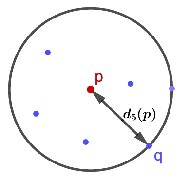

离群点又称之为异常点，在数据挖掘方面，经常需要在做特征工程和模型训练之前对数据进行清洗，剔除无效数据和异常数据。异常检测也是数据挖掘的一个方向，用于反作弊、伪基站、金融诈骗等领域。
LOF算法英文名称是Local Outlier Factor，局部离群因子检测。是基于密度的离群点检测方法中一个比较有代表性的算法。该算法会给数据集中的每个点计算一个离群因子LOF，通过判断LOF是否接近于1来判定是否是离群因子。若LOF远大于1，则认为是离群因子，接近于1，则是正常点。

上图从直觉上看，我们会觉得点A和点B是异常点，这是因为它们相对周围点的整体密度而言，较为孤立。现在的问题是，如何实现算法的通用性，可以满足将不同种密度分散情况迥异的集合的异常点识别。LOF可以实现我们的目标。
LOF 算法
现在来介绍LOF算法相关概念的定义。
- \(d( p,q )\)： 表示点 p 与点 q 之间的距离。
k-distance：第k距离
对于点 p 的第 k 距离 \(d_k(p) = d(p,o)\) 满足- 在集合中至少有不包括 p 在内的 k 个点 \(q:q\in C\{q\neq p\}\)，满足 \(d(p,q) \le d(p,o)\)；
- 在集合中最多有不包括 p 在内的 k−1 个点 \(q:q\in C\{q\neq p\}\)，满足\(d(p,q,)\gt d(p,o)\) ；
通俗的说就是点 p 的第 k 距离为 \(d(p,q)\) 就是距离点 p 第 k 远的点 q 距离，如下图
k-distance neighborhood of p：第k距离邻域
点 p 的第 k 距离邻域 \(N_k(p)\)，就是 p 的第 k 距离即以内的所有点，包括第 k 距离。 因此 p 的第 k 邻域点的个数 \(|N_k(p)|\ge k\)。reach-distance：可达距离
点 p 到点 o 的第 k 可达距离定义为：
\[
\text{reach-}d_k(o,p)=max\{d_k(p),d(p,o)\}
\]也就是，点 p 到点 o 的第 k 可达距离，至少是点 p 的第 k 距离，或者为点 p、o间的真实距离。
这也意味着，离点 p 最近的 k 个点，p 到它们的可达距离被认为相等，且都等于\(d_k(p)\)。如下图，p 到 \(o_2\) 的第5可达距离为 \(d_5(p)\)，p 到 \(o_1\) 的第5可达距离为 \(d(o_1,p)\)。

local reachability density：局部可达密度
点 \(ｐ\) 的局部可达密度表示为
\[
lrd_k(p) = 1/\bigg(\frac{\sum_{o\in N_k(p)} \text{reach-}d_k(p,o)}{|N_k(p)|} \bigg)
\]表示点 p 的第 k 邻域内点到 p 的平均可达距离的倒数。
注意，是p的邻域点 \(N_k(p)\) 到 p 的可达距离，不是 p 到 \(N_k(p)\) 的可达距离这个值的含义可以这样理解，首先这代表一个密度，密度越高，我们认为越可能属于同一簇，密度越低，越可能是离群点。如果 p 和周围邻域点是同一簇，那么可达距离越可能为较小的 \(d_k(o)\) ，导致可达距离之和较小，密度值较高；如果 p 和周围邻居点较远，那么可达距离可能都会取较大值 \(d(p,o)\)，导致密度较小，越可能是离群点。
local outlier factor：局部离群因子
点 p 的离群因子表示为
\[
LOF_k(p) = \frac{\sum_{o \in N_k(p)} \frac{lrd_k(o)}{lrd_k(p)}}{|N_k(p)|}
\]表示点 p 的邻域 \(N_k(p)\) 内的点的局部可达密度与点 p 的局部可达密度之比的平均数。
如果这个比值越接近1，说明 p 的其邻域点密度差不多，p 可能和邻域同属一簇；如果这个比值越小于1，说明 p 的密度高于其邻域点密度，p 为密集点；如果这个比值越大于1，说明 p 的密度小于其邻域点密度，p 越可能是异常点。